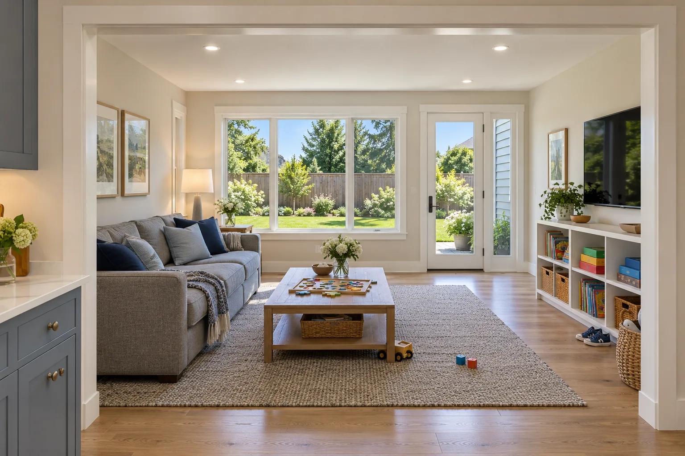
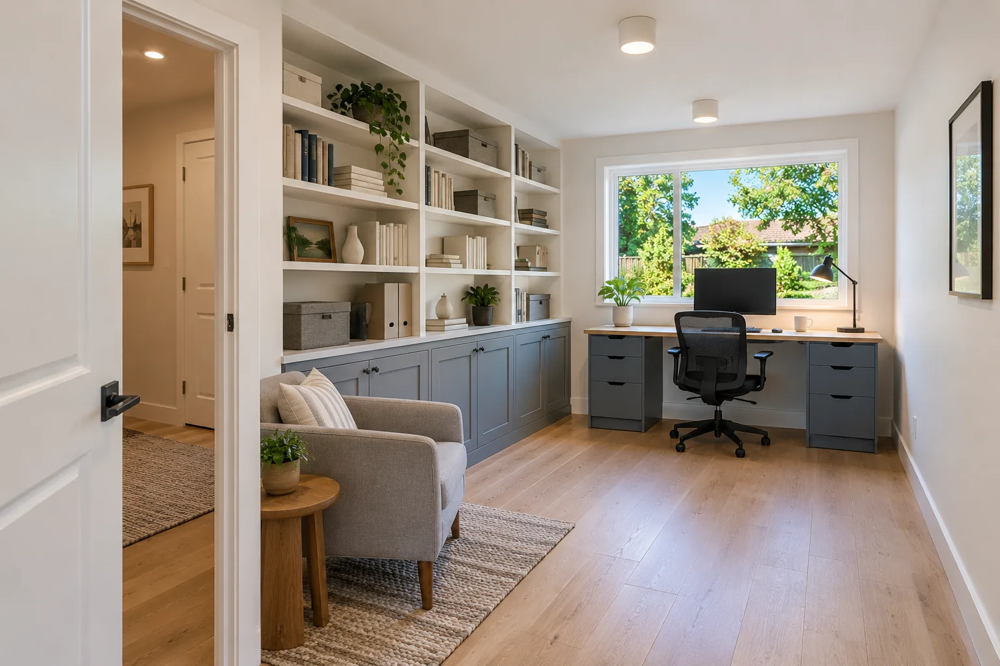

01 / Kitchen remodel
Kitchen Remodel in Westerville
More counter space and a clear path through the room, without moving a single wall.
Explore the projectProject portfolio
A few GOODSTEAD projects: what the homeowners wanted, what we found when we opened things up, and what we built.
More counter space and a clear path through the room, without moving a single wall.
Explore the project
A new family room off the kitchen for a family of six.
Explore the project
A garage nobody parked in became a real home office.
Explore the project